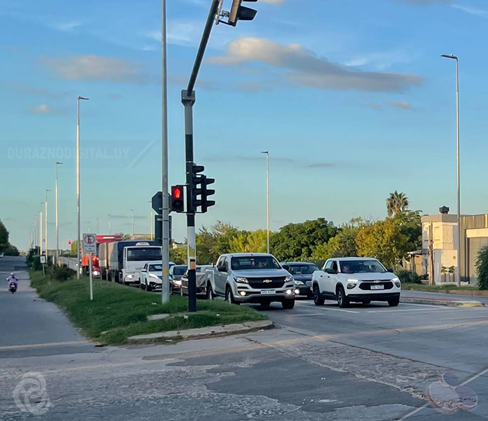

Ministerio del Interior difunde recomendaciones de seguridad y prevención vial

En el marco de las campañas nacionales de concientización, la Jefatura de Policía de Durazno recordó una serie de medidas de autoprotección y seguridad ciudadana destinadas a prevenir hurtos en la vía pública y promover un tránsito seguro.
Prevención en la vía pública y comercios
Se aconseja a los transeúntes evitar la exhibición innecesaria de objetos de valor en zonas concurridas, estar atentos en las inmediaciones de cajeros automáticos y reportar de inmediato cualquier vehículo o persona en actitud sospechosa a través del servicio 911 o mediante la aplicación oficial del Ministerio del Interior.
Controles de tránsito y documentación
Asimismo, la Brigada de Tránsito mantendrá operativos permanentes de verificación de cascos, licencias de conducir y documentación de vehículos en accesos a la ciudad y avenidas principales, promoviendo el cumplimiento de las normas de seguridad vial.